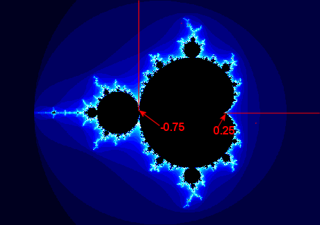

Mandelbrotmenge und Pi
Mandelbrotmenge M: z1 = 0.
Für jeden komplexen Parameter c wird die Zahlenfolge (zn) gemäss
zn+1 = zn2 + c betrachtet.
M ist die Menge aller Parameter c, für welche die Folge (zn) nicht divergiert.
Für das Auftreten der Ziffern von π sind mehrere Wege möglich.
Horizontaler Weg: Man setzt c = 0.25 + ε (ε>0)
Vertikaler Weg. Man setzt c = -0.75 + εi
Diese beiden Zahlen c sind nicht in der Mandelbrotmenge. Die Folge zn divergiert daher.
Man zählt nun die Anzahl Iterationen N, bis |zn| > 2. Je kleiner ε, desto grösser wird N.
Bei N zeigt sich dann ein erstaunlicher Zusammenhang mit π ≈ 3.141592653...
Sie können die Resultate in den untenstehenden Tabellen überprüfen, indem Sie die Anzahl Iterationen (maximal 40 Millionen) und Epsilon in die entsprechenden Felder eingeben und dann auf den gewünschten Button klicken.

- Iterationen = ε =
-
| ε | c | N | N √ε |
| 1 | 1.25 | 2 | 2 |
| 0.1 | 0.35 | 8 | 2.53 |
| 0.01 | 0.26 | 30 | 3.0 |
| 0.001 | 0.251 | 97 | 3.067 |
| 0.0001 | 0.2501 | 312 | 3.12 |
| 0.00001 | 0.25001 | 991 | 3.1338 |
| 10-6 | 0.250001 | 3140 | 3.140 |
| 10-7 | 0.2500001 | 9933 | 3.14109 |
| 10-8 | 0.25000001 | 31414 | 3.1414 |
| 10-9 | 0.250000001 | 99344 | 3.14153 |
| 10-10 | 0.2500000001 | 314157 | 3.14157 |
| ε | c | N |
| 1 | -0.75+i | 3 |
| 0.1 | -0.75+0.1i | 33 |
| 0.01 | -0.75+0.01i | 315 |
| 0.001 | -0.75+0.001i | 3143 |
| 0.0001 | ... | 31417 |
| 0.00001 | ... | 314160 |
| 10-6 | ... | 3141593 |
| 10-7 | ... | 31415927 |
Für c = 0.25 + ε gilt: N √ε ≈ π
Einen Beweis dafür finden Sie auf https://aperiodical.com/2015/03/mandelbrot-pi/
Zur Info über Juliamengen und Mandelbrotmenge.
©1997 - 2026 www.mathematik.ch |🔍